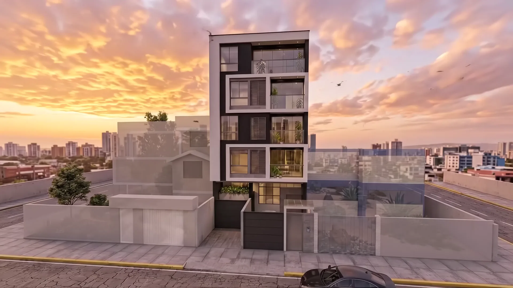
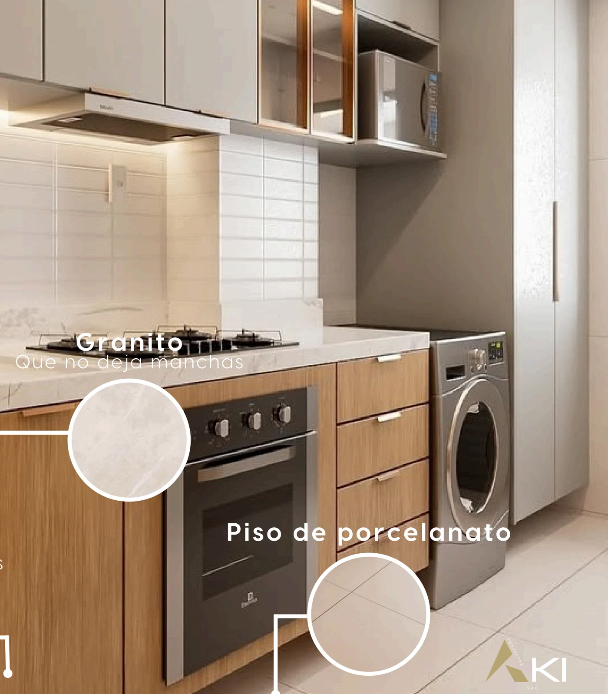
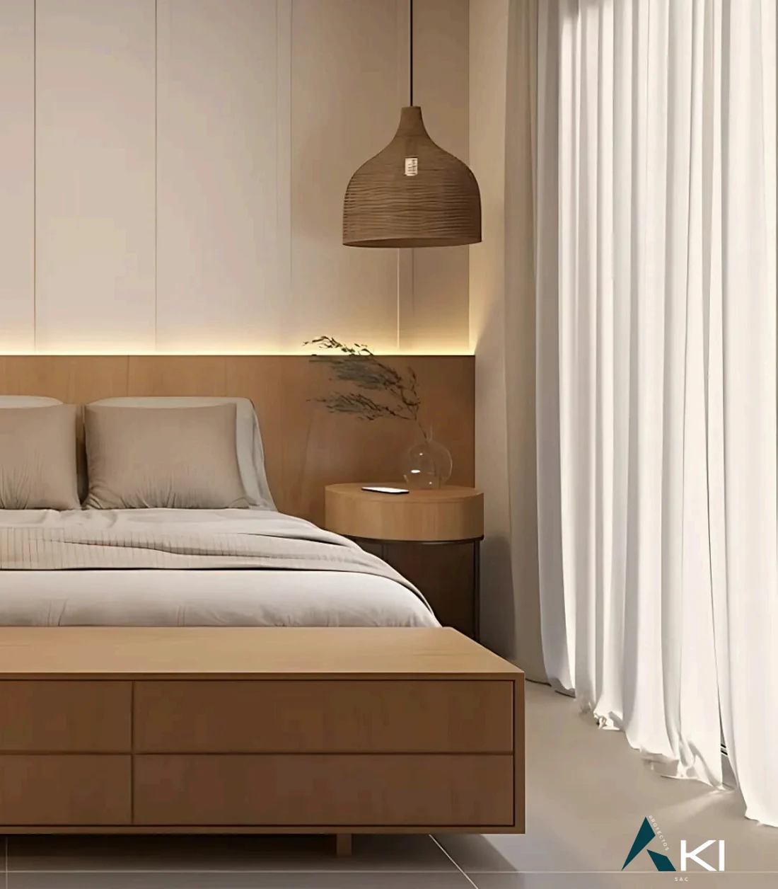
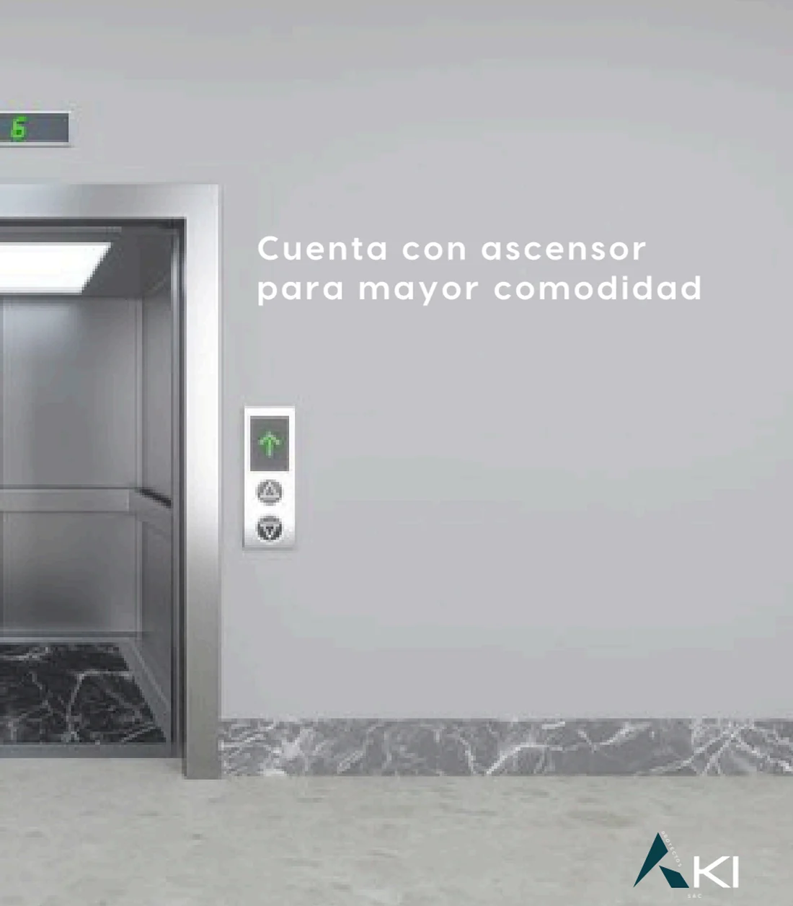

El edificio y su entorno
Cinco pisos, siete tipologías de 30 a 70 m², ascensor directo y acabados pensados para durar. En Jr. Prolongación Cuzco 1286, San Miguel.
Encuentra tu espacio según tu propósito
Filtra las residencias por estilo de vida o inversión. Consulta la ficha ampliada, cuota estimada y planos tectónicos.
Materiales que duran
Porcelanato y cerámico en pisos, granito que no deja manchas, melamine en muebles altos y bajos, y grifería de acero inoxidable.



Showroom de Materialidades
Cada textura y superficie ha sido validada para resistir la intemperie costera de Lima sin perder su carácter sobrio, elegante y de mantenimiento mínimo.
Granito Negro Absoluto en Cocinas
check_circleSuperficie ultra-compacta antialérgica, sin porosidad, resistente a altas temperaturas y cortes directos.
Melamina Tropicalizada de 18 mm
radio_button_uncheckedMuebles altos y bajos con cantos gruesos termo-adheridos que repelen la condensación salina.
Porcelanato Rectificado de Tránsito Intenso
radio_button_uncheckedAcabado mate sedoso de 60x60 en salas y cocinas con microjuntas que brindan amplitud visual.
Ascensor Tecnológico & Acero Satinado
radio_button_uncheckedTransporte vertical suave de baja sonoridad, con cabina en acero inoxidable y bajo consumo energético.

Encimeras y Mesones en Granito Pulido
A solo pasos de todo
Situado en Jr. Prolongación Cuzco 1286, un enclave silencioso y residencial en San Miguel con conexión peatonal fluida hacia los mejores centros comerciales, universidades y parques costeros.
Jr. Prolongación Cuzco 1286, San Miguel
Lima · Perú

Conversemos sobre tu próxima inversión
Recibe la lista de precios oficial de preventa, alternativas de financiamiento bancario sin intereses en cuota inicial y planos de distribución detallados.
Atención Personalizada en Vivo
Asesores disponibles en este momento
- mail ventas@proyectosaki.pe
- photo_camera Instagram @proyectos.aki
- public Facebook ProyectosAki
Solicitar Dossier & Precios
Preventa 2026Completa tus datos y te enviaremos al instante el catálogo digital con cotizaciones detalladas.